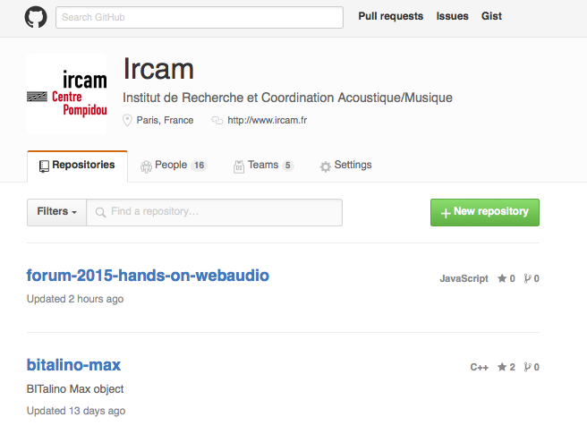
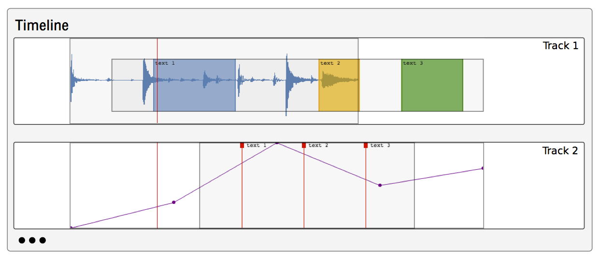

class: center, middle, inverse # Résultats du Projet ANR WAVE Séminaire Recherche et Technologie - Ircam Samuel Goldszmidt, Benjamin Matuszewski et Norbert Schnell --- # Point de départ, Web Audio / Ircam en 2010 ## Contexte Ircam * Publication en ligne * Base de données (*BRAHMS* et autres), * Musicologie numérique (*Ecoutes signées* et autres), * Logiciels d'informatique musicale <img src='./media/img/iMubu.png' height=200px/> <img src='./media/img/medias.ircam.fr.png' height=200px/> --- # Point de départ, Web Audio / Ircam en 2010 ## Ecosystème Web * **Standards et technologies émergentes** * Web Audio API (2010) * Liés au champ Web Audio : HTML5 (2008 audio element), WebSocket API, WebRTC (getUserMedia), HTTP streaming (DASH), Web Midi API, MediaStream Recording, Audio output devices API, Geolocation API, Device Orientation et Device Motion API, Presentation API ... * JavaScript ("es6/7, doc, test, coverage") * **Open source** (Licence, GitHub - [Ircam-rnd](https://github.com/Ircam-RnD)) et **Open Data** <center></center> --- # Point de départ, Web Audio / Ircam en 2010 > **Technologies audio faiblement exploitées sur le web** (Deezer, Spotify, The Echo Nest, SoundCloud : des services simples) <center>(...)</center> * Soumission du projet WAVE en 2011 (Ircam, Eurecom, UMPCF, Vi-live) * Présentation à *Janus 2* en mars 2012 <center>(...)</center> > Début du projet WAVE en Novembre 2012 --- class: center, middle, inverse #Pourquoi transférer nos savoirs et technologies d'informatique musicale vers la plateforme Web alors que celle-ci est technologiquement moins performante ? ??? Au moment ou le "Web Audio" émergent véritablement pour des applications exigentes Et est accessible sur (quasi) tous les périphériques connectés de dernière génération #### Pourquoi transférer des savoirs, des technologies, des algorithmes d'informatique musicale de l'Ircam vers la plateforme Web ? * 3 000 000 000 d'utilisateurs - s'adresser au plus grand nombre * *Browser As An OS*, pas d'installation - "TTM" minimal * Plateforme partagée, multi-utilisateurs, temps réel et multimédia * Nouveaux champs d'expérimentation et de recherche et retours utilisateurs ex. Word → Google Doc Contexte Ircam Des expériences d'intégration technologique (max <=> flash), mais non généralisables Constat Même si les applications propriétaire ont des fonctionnalités débridées par rapport aux applications web natives, pas d'application vraiment innovantes (shazam qd même) --- ## Transferts de savoirs et technologies vers le web > Dans le cadre du projet WAVE * Formalisation * des cas d'usage existants et innovants * musicologie numérique (APM) * musicaux (ISSM) * spécifications fonctionnelles * spécifications techniques * Démonstrateurs pour validation * Développement de la librairie *waves.js* (développé *pour* et *sur* le web) ??? ## Transferts de savoirs et technologies vers le web * Formalisation : * spéfications fonctionnelles en regard d'application déjà développées (ex. MuBu, AudioSculpt) * spécifications techniques : ne pas simplement wrapper un standard mais adresser un problème d'informatique musicale au delà des standards existants * Démonstrateurs pour validation => re-développement de dev flash * Transferts de savoir et technologies : * avec un 'avantage' pour les contenus musicologiques, c'est qu'ils ne vieillissent pas. ("migration techniques") * interroger, brièvement encore, les possibles "web audio" pour la recherche à l'Ircam --- ## Synergies, collaborations, disséminations * Equipes de recherche (APM, ISMM, EAC ...) - des projets transversaux * WAC - Web Audio Conference * 2015 Ircam/Mozilla Paris * 2016 GeorgiaTech/Atlanta * **CoSiMa** (+ résidence artistique) * "Hands on session" (ex. : avec musicologues, développeurs, chercheurs) ??? ## Synergies, collaborations, disséminations Norbert : à toi ? musicologues, développeurs, chercheurs ET 3 types d'utilisateurs de nos libs 'utilisateurs finaux, développeurs JavaScript et ingénieur traitement du signal' --- # Librairies waves.js * [waves.js](https://github.com/wavesjs) * Une librairie pour faciliter le développement d'app Web Audio * Passerelle entre les standards du web et les fonctions primitives des applications musicales * [UI](http://wavesjs.github.io/ui/) : afficher/éditer des données audio et temporelles dans le navigateur * [LFO](https://github.com/wavesjs/lfo) * [Audio](http://wavesjs.github.io/audio/) : moteur audio et ordonnanceur * [Démonstrateurs](http://wave.ircam.fr/demo/) * [Music Information Retrieval "Phoenix"](http://wave.ircam.fr/demo/phoenix-1901/) * [Musicographie "Bachothèque"](http://wave.ircam.fr/demo/bachotheque/) * [Musicologie "Voi(rex) 3e mouvement"](http://wave.ircam.fr/demo/leroux-voirex/) * [Pedagogie "Jupiter"](http://wave.ircam.fr/demo/manoury-jupiter/) * Performance --- # _UI_ <center></center> #### `Timeline` > `Tracks` > `Layers` > `Shapes` ??? Demos : - `2015-12-02-demos-ui/waveform-visualizer-component` * !!! à lancer avec `http-server` !!! * html tag * description du code js (timeline, tracks, layers, interactions) * remplacement du `WaveformHelper` par la version bas niveau - `2015-12-02-demos-ui/playback-control` --- # _UI_ <center></center> #### `Timeline` > `Tracks` > `Layers` > `Shapes` #### + `EventSource`, `States` _et_ `Behaviors` _pour les interactions_ ??? Demos : - `2015-12-02-demos-ui/waveform-visualizer-component` * !!! à lancer avec `http-server` !!! * html tag * description du code js (timeline, tracks, layers, interactions) * remplacement du `WaveformHelper` par la version bas niveau - `2015-12-02-demos-ui/playback-control` --- # _LFO_ : formalisation de stream (cf. `PiPo`) ##### Bibliothèque de sources * Audio : `AudioInBuffer`, `AudioInSource` * Données (mouvement, etc.) : `EventIn` * Réseau: `SocketClient`, `SocketServer` ##### Bibliothèque de sinks * Enregistrement: `AudioRecorder`, `DataRecorder` * Réseau: `SocketClient`, `SocketServer` * Visualisations: `Waveform`, `Bpf`, `Trace`, `Sonogram`, `Spectrogram` ##### Bibliothèque d'opérateurs de streams * `Biquad`, `Framer`, `Fft`, `Magnitude`, `MinMax`, `MovingAverage`, `MovingMedian`, * défini par l'utilisateur: `Operator` ```js lfo.operators.Operator({ onProcess: (time, frame, metadata) => { /* ... */ } }); ``` ??? Démos : - `2015-12-02-demos-lfo/sink-visualizers` - `2015-12-02-demos-lfo/onset-detector-online` - `2015-12-02-demos-lfo/onset-detector-offline` * montrer que seule la source lfo change - `2015-12-02-demos-lfo/socket` * penser à lancer le seveur nodeJS * le desktop doit attaquer `sink.html` * le mobile doit attaquer `index.html` --- # Suite, Web Audio / Ircam à partir de 2016 * **Les standards et technologies** * se développent (ex. : W3C music notation group https://www.w3.org/community/music-notation/ Long Term Add Document Object Model (DOM) manipulation and interactivity to MusicXML) * Site institutionnel de l'Ircam, services en lignes, Open Source et Open Data * *... comment encourager les contributions ?* * **La recherche en informatique musicale** * User Experience (CoSiMa) * Projets de résidence * Expériences en ligne ? * *et ... ?* > *Quelles implications et quelles idées pour le Web Audio dans la recherche à l'Ircam ?* ??? service en ligne * existent déjà (ex. SOFA, aspect contributif aussi, ou "social" type Ulysses) * manque "d'agilité" et de réponse aux changements rapides * Prestation de développement La recherche en informatique musicale : "Facile de redévelopper pour le context web, mais il faut s'interroger sur ce qu'apporter ce changement de paradigme, ex. comment prendre appui sur la multitude etc." Les standards et technologies comment encourager les contributions ? nos réponses : pas réinventer la roue et suivre des normes --- class: center, middle, inverse # et HAL !